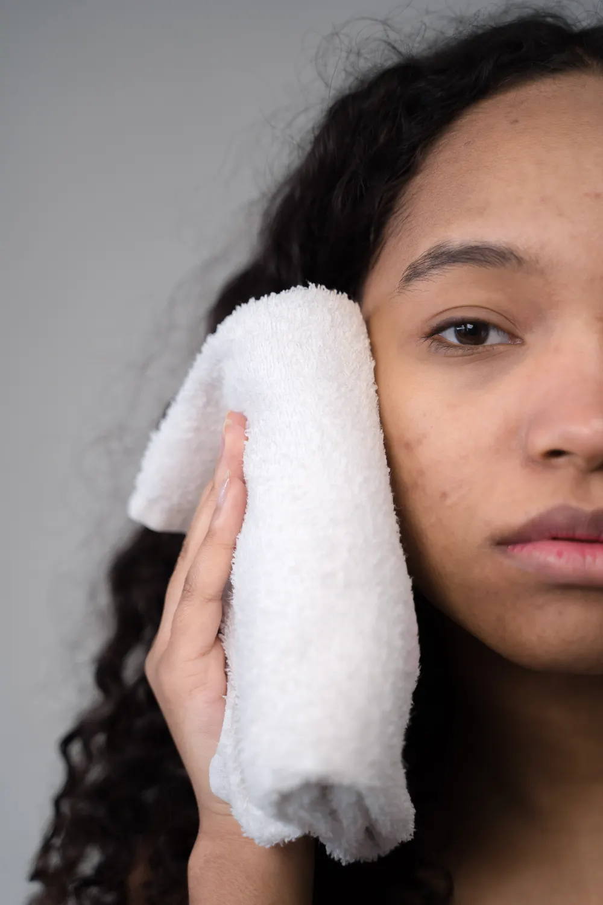
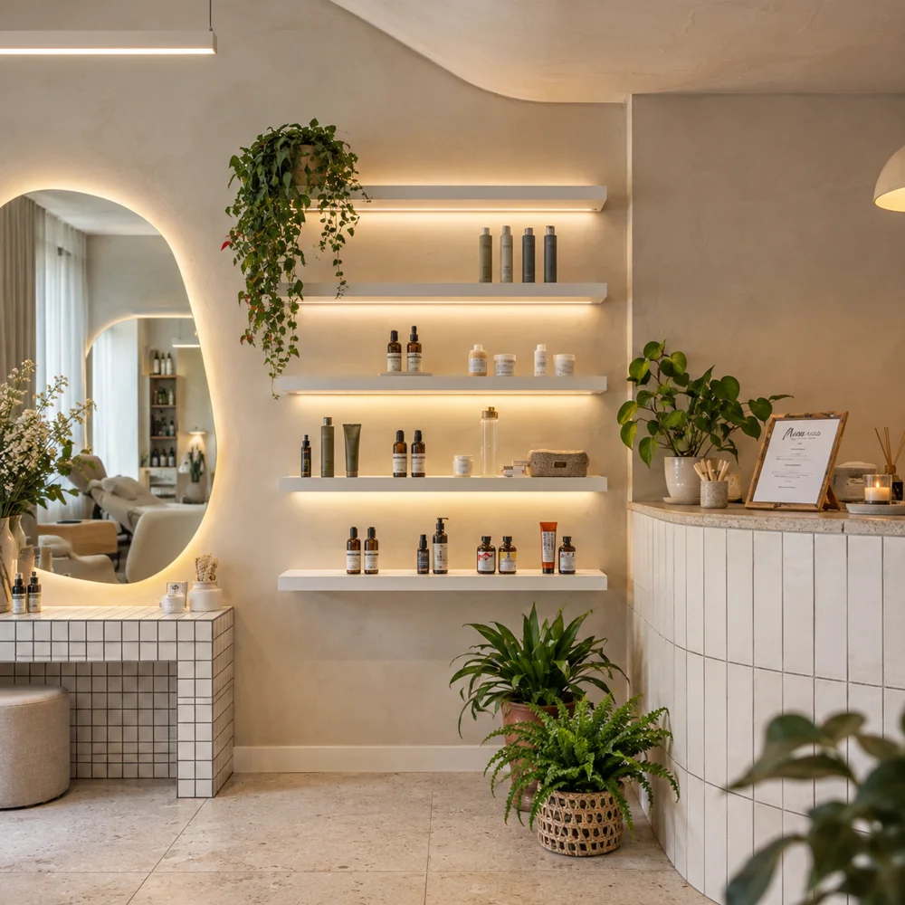
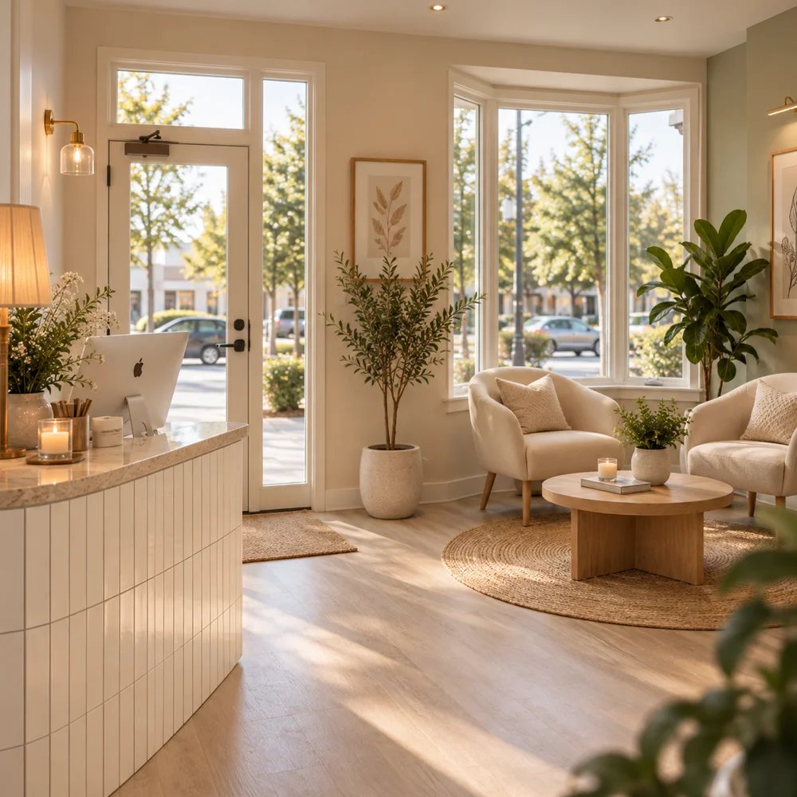
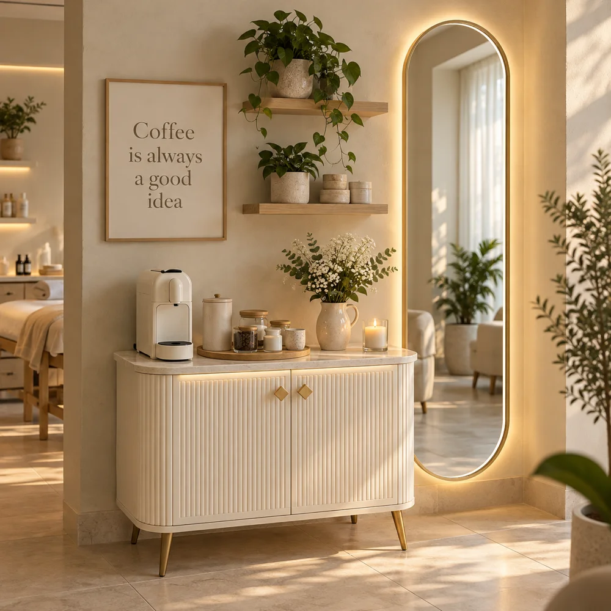
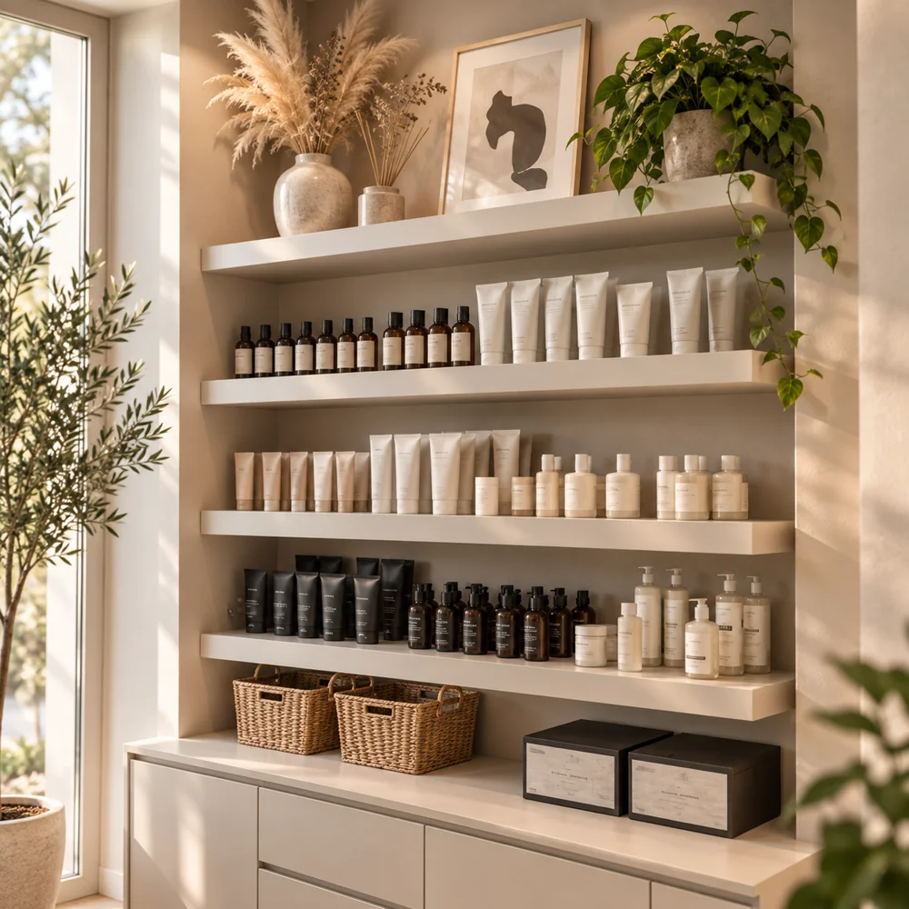
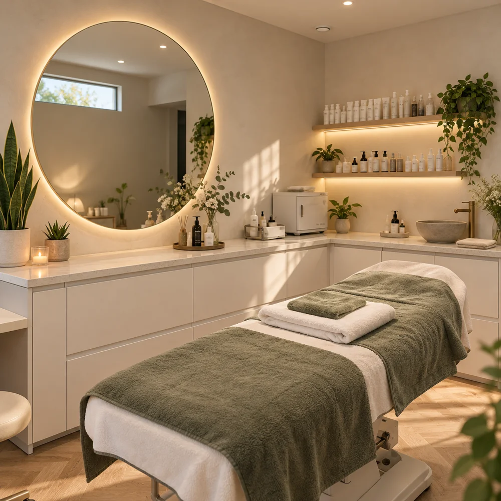
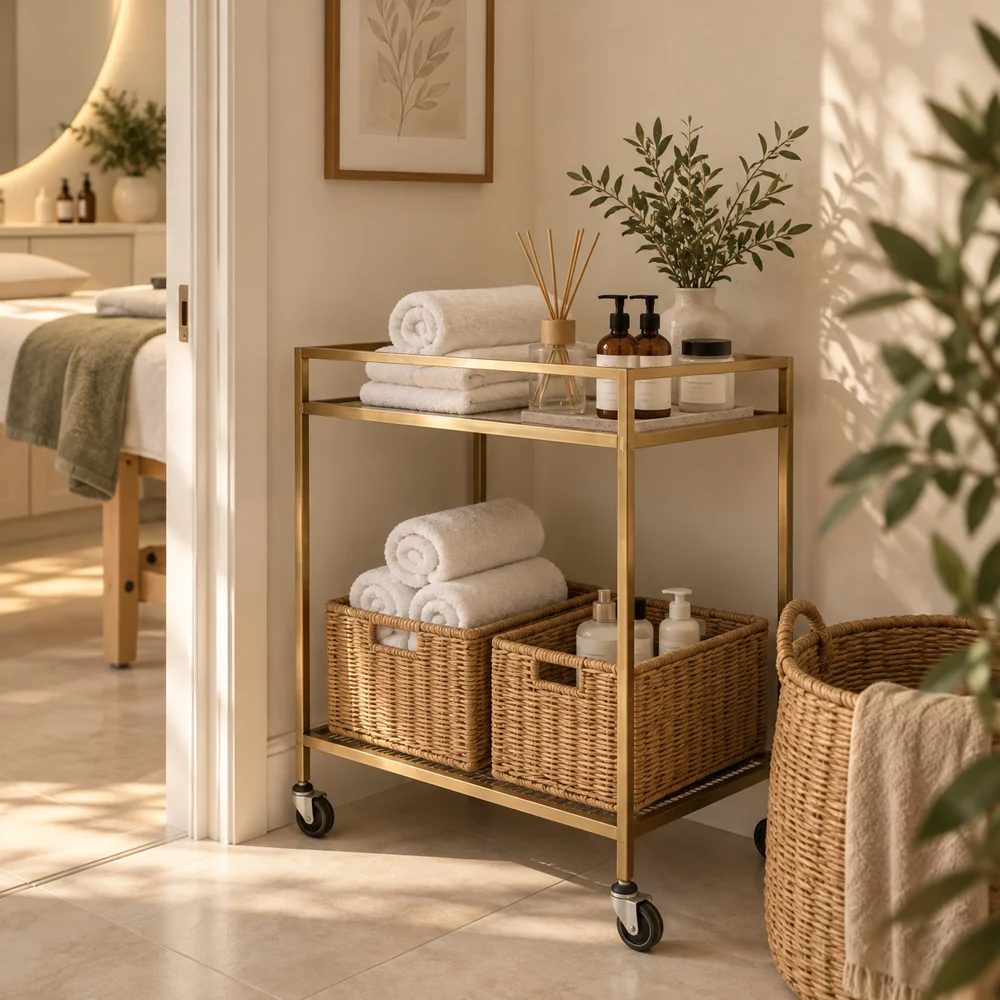

Az Eliza Beauty Salon alapítása – 2011
Kozmetikus végzettségem megszerzése után megnyitottam az Eliza Beauty Salont, ahol azóta is vendégeim bőrének ápolásával foglalkozom.
Szia, Eliza vagyok, a leendő kozmetikusod!
A szépség mindig is az életem része volt, így nem volt kérdés, hogy a kozmetika lesz a hivatásom. 2011-ben megnyitottam saját szalonomat, az Eliza Beauty Salont, ahol azóta is azon dolgozom, hogy vendégeim bőre ne csak szebb, hanem egészségesebb is legyen. Az első évek sok tanulással és kihívással teltek, de a kitartásomnak köszönhetően folyamatosan fejlődtem.
Hiszem, hogy a kozmetika többről szól, mint a szép bőrről – önbizalomról, jó közérzetről és énidőről is. Ezért a kezeléseim célja nemcsak a látványos eredmény, hanem az is, hogy vendégeim feltöltődve és magabiztosan távozzanak.

A személyes figyelem mögött biztos szakmai alapok és folyamatos tanulás áll.
Kozmetikus végzettségem megszerzése után megnyitottam az Eliza Beauty Salont, ahol azóta is vendégeim bőrének ápolásával foglalkozom.
Szakmai tréneri és oktatói képesítést szereztem, tovább bővítve kozmetikai ismereteimet és szakmai felkészültségemet.
Sikeres mestervizsgát tettem, amellyel tovább mélyítettem szakmai tudásomat és gyakorlati tapasztalataimat.
Rendszeresen fejlesztem tudásomat, és új bőrfiatalító technológiákat, hatóanyagokat és kezelési módszereket ismerek meg.
Év szakmai tapasztalat
Vendég
Féle kozmetikum
Tekints be a szalon hangulatába, és fedezd fel azt a környezetet, ahol minden kezelés Rólad és a bőröd igényeiről szól.






Kérdésed van a kezelésekről, vagy időpontot szeretnél egyeztetni? Keress bizalommal, és segítek megtalálni a számodra legjobb megoldást!
A tananyagban megadott minta-elérhetőségek.